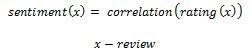
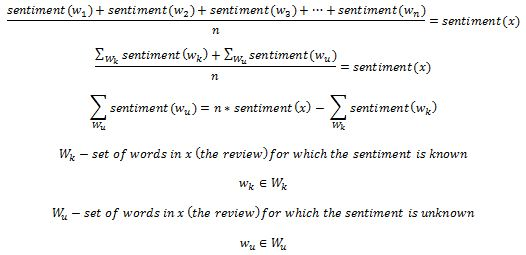
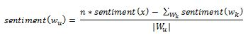
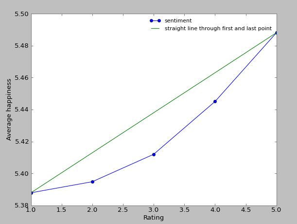

Investigation on LabMT set extension using online book reviews by Bogdan Sorlea, s121075
Motivation what is the meaning of this?!
The idea behind the following implementation is that of extending the labMT word set (or, to be more precise, of word-sentiment pairs) using assessment of sentiment for online book reviews. The labMT data set containes a rather limited set of words (the most common ones), so extending it artificially (especially in relation to more domain-specific words) in interesting to analyze. The method proposed here, although improvable and flexible (different ways of computing the sentiment can be utilized), aims at obtaining sentiment ratings for new words, as a function of the review rating, the sentiment of the known words and a correlation function between rating and known sentiment.
Theoretical Foundation way to go, Einstein!
As mentioned before, the proposed algorithm takes as inputs a function of correlation between the rating and known sentiment (computed sentiment of the known words in the corresponding review), the labMT word set (word-sentiment pairs) and a set of reviews (as text) with its corresponding rating.
Correlation function
This is a function obtained by computing the sentiment for all the reviews in a (rather large) set. The correlation function would best fit (approximate, having least amount of error) the points (rating(x), sentiment(x)), where x is the variable depicting every review in the set. The sentiment for a review is computed based only on the known words (words in the labMT set).
LabMT set and reviews
Although the labMT set contains many parameters for each word, only the sentiment rating will be used here. The review is basically composed of review text and review rating. Note that, in order to achieve consistency, both the rating and the labMT sentiment value are normalized to a value between 0 and 1 (the rating is normalized after being transformed to its sentiment correspondent, using the correlation function).
Algorithm
The algorithm starts with the idea that the overall sentiment of a review is equal to the average of all (or most) of the words in the review text. As opposed to the case when we know the individual (word) sentiments and we aim at obtaining the overall sentiment, we are now dealing with a case where these individual sentiments are only partially known, but the overall sentiment is known (or estimated), by passing the review value through the correlation function.
For doing this computation, we can use arithmetical or geometrical mean - for illustration purposes, I will use the arithmetical mean (although the geometrical mean way is similar, with minor changes). Using the arithmetical mean we will essentially have a sum of sentiment values divided by the number of terms in the sum. This will be equal to the rating-corresponding sentiment value of the overall text.
The terms in the sum can be grouped into known values and unknown values, resulting in a formula for determining the value of the sum of the unknown sentiment values. Then, because it's difficult to discriminate which of the terms contribute more or less, we will assume equal sentiment for the unknown words.
In the end, combining the obtained sentiment values for the same word from different reviews, we will obtain a value which, hopefully, will converge (with some error) to its correct sentiment value. The way to combine the values that is used here is simple arithmetic average.
Data Source you've been reading my diary again, haven't you?!
The data source used in this implementation is the on-line social book review platform called Goodreads. This data source was chosen because:
- of the high number of reviews available (especially for popular books)
- the integration with social media provides an additional "likes" rating for the actual review (in case of algorithm extension to include that)
- the reviews have no product-based biasing (the reviews are towards the book contents, with no influence regarding product properties - e.g. book quality, color quality, shipping, other)
The data set used comprises about 30000 reviews taken from Goodreads (although more reviews can be scraped, I decided to not increase the set too much). I tried to focus the data to be part of a certain domain (in this case a book category - Epic Fantasy), so I scraped reviews from the most famous (and reviewed) fantasy books, e.g. "Game of Thrones" series. This decision was based on the fact that reviews for books in the same category would yield higher frequency for the new words - since many of them might be domain-specific words.
Each of the reviews on the website contain an actual text review, a rating (given as number of stars) and a "like" rating, i.e. the number of likes the reviewer received from its friends in the community. All these three elements are scraped, but the "like" rating is not taken into account in this version of the implementation. Also note that the scraper implemented ignores the reviews that have no rating associated to them (data being irrelevant to the algorithm).
Implementation engineer at Work, do not disturb!
First step in the implementation process was obtaining the correlation function. This function was obtained by running this data through the algorithm implemented by Lukasz.
This function was approximated by a linear function, similar to the one in the image above - but transposed on the vertical axis in the downwards direction by 0.01, in order to best-fit the sentiment analysis (reduce the error). The computed function is
f(x) = 0.025 * x + 5.355
In order to provide some sort of validation, I've split the labMT data set into a 9:1 ratio, considering the 9-part as the labMT data set for training (where the word sentiment values are looked-up) and the 1-part for validation (to compare the obtained values with the actual values of labMT).
The algorithm was implemented using a geometrical mean-based approach (similar to the one explained in "Theoretical Foundation" section). The reason for this decision is that during implementation it was observed that the geometrical mean approach has fewer misses compared to the arithmetical mean approach. By "miss", I refer to the fact that in certain conditions, the sentiment value obtained for the individual unknown words, normalized is greater than 1. This happens when the rating (and therefore the sentiment) is high, but the known words induce a sentiment which is too low, therefore the unknown sentiment having to be higher than 1. Note that cases like this are disregarded.